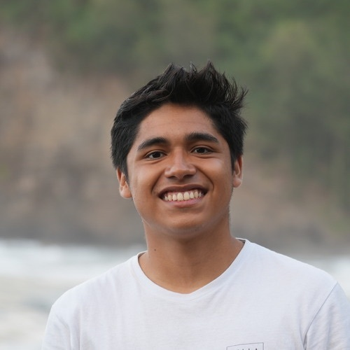

MessyNav
MessyNav: Zero-Shot Interactive Navigation via Manipulation in Messy Environments
Conference on Robot Learning (CoRL), 2026
* Equal contribution

EECS Undergraduate at UC Berkeley · Researcher at Stanford
Hey! I am an undergraduate at UC Berkeley (go bears!) majoring in Electrical Engineering and Computer Sciences.
Currently, I am working in the Interactive Perception & Robot Learning Lab at Stanford, mentored by Professor Jeannette Bohg, Dr. Cherie Ho, and Carlota Parés-Morlans. I am also working in the Stanford Intelligent and Interactive Autonomous Systems Group (ILIAD), mentored by Professor Dorsa Sadigh, Dr. Jennifer Grannen, and Suvir Mirchandani.
MessyNav: Zero-Shot Interactive Navigation via Manipulation in Messy Environments
Conference on Robot Learning (CoRL), 2026
* Equal contribution
DexDrummer: In-Hand, Contact-Rich, and Long-Horizon Dexterous Robot Drumming
ICRA 2026 Workshop on Dexterity with Multifingered Hands